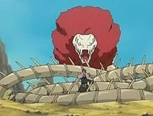

Everyone can reply
Gallery
Gif
Polls
Emoji
Schedule
Tag Location
Momo Lieutenant
@MomoTheSoulReaper
Aizen's most trusted lieutenant and master of kido.
5k
Following
19k
Followers
Momo Lieutenant
@MomoTheSoulReaper
More
I still believe Aizen is good inside,
someone must be controlling him. :)
` 
Repost
Likes
Bookmark
Share
Future Captain
@Lieutenant_Rengie
Lieutenant of the best squad ever, with the best
Captain ever. Unlocked my bankai so y'all better
watch out
9k
Following
157k
Followers
Future Captain
@Lieutenant_Rengie
More
Finally unlocked my Bankai,
Captain Byakuya better watch himself :/
` 
Repost
Likes
Bookmark
Share

The Relaxing cat
@Relaxingcat
3k
Following
2k
Followers
The relaxing cat
@RelaxingCat
More
bleach is overrated if you ask me :/
`
Repost
Likes
Bookmark
Share
Hottest Lieutenant
@Sexiest_Lieutenant_Rangiku
hey :) its your most attractive lieutenant here|
Lover of drinks| boys| SHOPPING| all things earth
2k
Following
559k
Followers
Hottest Lieutenant
@Sexiest_Lieutenant_Rangiku
More
I love shopping in the world of the living,
its so relaxing and amazing, some many things to choose from. ;)
` 
Repost
Likes
Bookmark
Share
Subscribe to Premium
Subscribe to unlock new features and if eligible, receive a share of ads revenue.
Trends for you
Trending in South Africa
Sies
1,061 posts
Entertainment Trending
Elsa
21K posts
Trending in South Africa
#Blewit
Trending in South Africa
Oppenheimers
2,274 posts
Show more
Who to follow
Momo Lieutenant
@MomoTheSoulReaper
Future Captain
@Lieutenant_Rengie
Hottest Lieutenant
@Sexiest_Lieutenant_Rangiku
Show more
Terms of Service
Privacy Policy
Cookie Policy
Accessibility
Ads info
More...
© 2024 X Corp